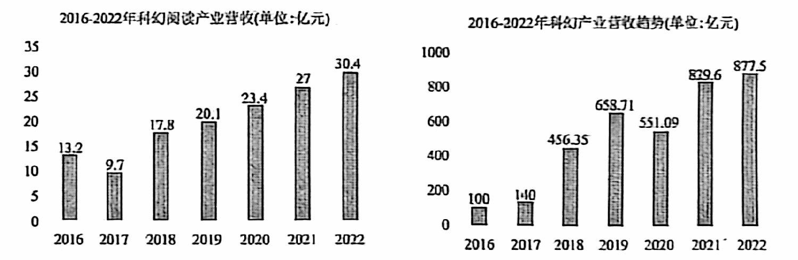

石家庄市第二十七中学 2025—2026 学年第二学期期末考试
初 一 语 文
命题人：语文组
（共 120 分）
注意事项：
1．考生务必将自己的姓名、班级、考场、座位号、准考证号填写在答题卡上，并在规定区域里正确粘贴条形码。考试结束，监考人员将答题卡收回，试卷自行保管。
2．客观题用 2B 铅笔把答题卡对应题目的答案标号涂黑，主观题用 0.5 毫米黑色签字笔作答，务必在规定区域作答，答案写在规定区域外无效。
第一部分（1—5 题 共 20 分）
学校举办“大美河北，大‘游’作为”主题系列活动，请你参与。
1．为探寻“大美河北”之“美”，小语同学整理了以下文字，请认真阅读，并回答问题。
巍巍太行，燕赵故地。深厚的文化根源和独特的自然条件，让河北拥有丰富的非物质文化遗产。河北梆子唱腔高亢激越，伴奏热烈火炽，很有（zhèn hàn） 力。常山战鼓表演形式多样，出神入化，时而如雷霆万钧、惊天动地，掀起万丈（kuáng lán） ，时而如雨打芭蕉、欢快清脆，让人目不暇接，（táo zuì） 其中。广府杨氏太极拳以中国传统儒、道哲学中的阴阳辩证理念为核心思想，集颐养性情、强身健体等多种功能于一体，广受人们的关注和学习。武强木版年画、蔚县剪纸、吴桥杂技、耿村民间故事、曲阳定窑……这些非物质文化遗产，（甲） 展示了河北的历史风貌，（乙） 反映了河北的文化内涵。河北，一个充满人文魅力、文化氛围浓厚的宝地，值得我们去探索和欣赏。
相信大河之北，大美河北，肯定能大显身手，大有作为。
（1）根据文段中拼音写出相应的词语。（3 分）
① zhèn hàn ② kuáng lán ③ táo zuì
（2）给文段中加着重号的字标注读音。（2 分）
① 火炽 ② 氛围
（3）文段中的“霆”字，使用《现代汉语词典》（第 7 版）中的部首检字法检索，应先查① 部，再查② 画。书写该字时，第九笔的笔画是③ 。（3 分）
2．文中甲、乙两处缺少关联词语，下面选项最恰当的一项是（ ）（2 分）
A．无论 都 B．因为 所以
C．不仅 还 D．虽然 但是
为了展示“大美河北”，也为了契合“大‘游’作为”的主题，小语同学决定做一个视频宣传河北的旅游资源，请帮他解决下面的问题。
3．下面是介绍承德避暑山庄的语句，排序最恰当的一项是（ ）（2 分）
①它是中国现存最大的古典皇家园林
②山庄以朴素淡雅的山村野趣为格调，取自然山水之本色
③承德避暑山庄，又名“承德离宫”或“热河行宫”
④兼具江南水乡的温婉与北方草原的雄浑
⑤清代皇帝每年有半年时间在此避暑、处理政务
A．③①⑤②④ B．①③⑤②④ C．③①②④⑤ D．①③②⑤④
4．名人效应具有良好的宣传效果，小语想从河北的历史名人入手给视频配一段宣传文案，下面是文案的一部分，请结合《登幽州台歌》的相关内容补全句子。（2 分）
武灵王胡服骑射，彰显勇于改革的形象；燕昭王 ， ；蔺相如回避谦让，演绎团结和睦的传奇。
5．在下列横线上填写出相应的句子。（6 分）
阅读古诗文，可以让我们看见自然、领悟人生。《木兰诗》中的“（1） ，对镜帖花黄”，让我们看见热爱生活的爱美女子；刘禹锡《陋室铭》中的“（2） ，草色入帘青”，让我们看见清幽雅致的生活环境；龚自珍《己亥杂诗》中的“落红不是无情物，（3） ”，让我们看见无私奉献的精神追求；陆游《游山西村》中的“（4） ，柳暗花明又一村”，让我们看见坚持下去就能迎来转机的豁然开朗；王维《竹里馆》中的“（5） ，明月来相照”，让我们看见诗人与自然对话、与天地精神往来的惬意；韩愈《晚春》中的“杨花榆荚无才思，（6） ”，让我们看见自然草木也有了人的情思。
第二部分（6—21 题 共 50 分）
（一）阅读下面的古代诗歌，回答后面的问题。（共 5 分）
望岳
杜甫
岱宗夫如何？齐鲁青未了。
造化钟神秀，阴阳割昏晓。
荡胸生曾云，决眦入归鸟。
会当凌绝顶，一览众山小。
6．关于这首诗的分析与理解，有误的一项是（ ）（2 分）
A．诗歌作者杜甫是唐代现实主义诗人，字子美，后世尊称他为“诗圣”。
B．前两句写泰山的远景，以问答的形式写出了泰山雄伟阔大的气势。
C．“阴阳割昏晓”一句写出了在同一时间，山南山北明暗不同的景象。
D．“决眦”写出了诗人俯视时的全神贯注，衬托了泰山的雄伟壮丽。
7．你在朗读“会当凌绝顶，一览众山小”时，会重读哪些字？请在句子中标注，并结合诗歌内容说明理由。（3 分）
链接材料： 重音，是为传情达意的需要，对语句中的某些词或短语通过重读的形式加以强调。一般用“·”标示在词语下面。如：山朗润起来了，水涨起来了，太阳的脸红起来了。 |
标注重音：会当凌绝顶，一览众山小。
理由：
（二）阅读下面的文言文，完成下面小题。（共 14 分）
【甲】
水陆草木之花，可爱者甚蕃。晋陶渊明独爱菊。自李唐来，世人甚爱牡丹。予独爱莲之出淤泥而不染，濯清涟而不妖，中通外直，不蔓不枝，香远益清，亭亭净植，可远观而不可亵玩焉。
予谓菊，花之隐逸者也；牡丹，花之富贵者也；莲，花之君子者也。噫！菊之爱，陶后鲜有闻。莲之爱，同予者何人？牡丹之爱，宜乎众矣。
（周敦颐《爱莲说》）
【乙】
兰之味，非可逼而取①也。盖在有无近远续断之间，纯以情韵胜。氲氲无所②，故称瑞③耳。体兼彩④，而不极于色，令人览之有馀，而名之不可；即善绘者以意取似，莫能肖也。其真文王、孔子、屈原之徒，不可得而亲，不可得而疏者耶？
（选自张大复《梅花草堂集》）
【注】①取：这里是嗅取（兰的香味）。②氲氲（yūn）无所：弥漫飘忽，没有一定的地方。③瑞：吉，善。④兼彩：兼有各种颜色。
8．解释下列句中加点的词。（4 分）
（1）濯清涟而不妖（ ） （2）香远益清（ ）
（3）莫能肖也（ ） （4）不可得而疏（ ）
9．下列对【甲】【乙】两文的理解和分析，不正确的一项是（ ）（2 分）
A．【甲】文通过对莲的形象和品质的描写，歌颂了君子坚贞高洁的品格。
B．【乙】文写兰花的香气“在有无近远续断之间”，突出了其香气飘忽不定、难以捕捉的特点。
C．【甲】文用菊和牡丹正衬莲的高洁；【乙】文认为兰花的神韵即使是善于绘画的人也无法完全描摹。
D．两文都采用了托物言志的手法，表达了作者对理想人格的追求。
10．将下列句子翻译成现代汉语。（4 分）
（1）莲之爱，同予者何人？
（2）令人览之有馀，而名之不可。
11．【甲】文称莲为“花之君子”，【乙】文将兰比作“文王、孔子、屈原之徒”。请结合两文内容，简要分析莲与兰在精神品质上的异同。（4 分）
（三）阅读下面文章，完成下面小题。（共 8 分）
【材料一】
十九世纪 70 年代，法国的科幻巨擘用他的《海底两万里》，向大家展示了一个奇幻的海底世界。航船能够在水面上行驶，也能够潜入海底几千米，能够不用陆地上的能源和食物，而在海里实现自给自足。从此，科幻小说的大门被打开了。
二十世纪 90 年代，我国科幻小说逐渐兴起。科幻作家刘慈欣创作的长篇科幻系列小说《三体》，讲述了地球人类文明和三体文明的信息交流、生死搏杀及两个文明在宇宙中的兴衰历程。
二十世纪后期，《人猿星球》《侏罗纪公园》等影片让科幻电影走进了我们的视野。科幻电影可以说来自于科幻小说，多数科幻电影以科幻小说为基础。“今人不见古时月，今月曾经照古人。”热映的科幻电影《流浪地球 2》，以宏大的“逐月计划”赋予李白诗句全新意涵。与此同时，动画版、电视剧版《三体》，动画电影《熊出没·伴我“熊芯”》相继播映，也用科学技术和艺术想象把观众引入陌生的灿烂之地。从默默无闻到声名鹊起，中国科幻电影经过几年的发展期，跃迁至全新的高度。
【材料二】
科技成为了讲述故事最重要的驱动力。科幻小说往往是在科技发展基础上的推理和预言，如《海底两万里》的航行路线依据的是人类对航海新大陆发现的成果；《三体》是运用现有科学知识对太空文明的预言。科幻电影所言必须要基于科学的合理推演和虚构，才能够成立。比如郭帆执导的科幻电影《流浪地球》里，地球要被遍布于地表的推进器推着逃离太阳系，这个构想虽然目前的科学无法实现，但是在未来的某一天是有可能的，而逃离要解决的太阳爆炸问题，也是通过科学的推演而得来的，并不是空穴来风。科学幻想一定要讲科学，它应是科学家头脑里的一种幻想，而不是漫无边际的胡想，虽然可能现在还没有研发出来，但能看得到苗头、有望实现。
科幻是科技时代的见证。好的科幻作品不会凭空出现，而是一国的科技发展在创作上的投射。只有强盛的国家才能托举起强大的科幻产业。20 世纪 90 年代，随着我国政府加强“科技兴国”宣传，科技事业不断发展，出现了诸多有利于科幻创作的条件。
（摘编自人民网《培育更多更好的中国科幻作品》）
【材料三】

（摘编自《2023 中国科幻产业报告》）
【材料四】
科幻小说对未知世界的想象也在一定程度上促进了科技的发展，如《海底两万里》想象的海底潜艇早已成为现实。
那些曾经看来是未来世界的科幻电影，很多都成为了现实。
无人机：《终结者》（1984）
电影中，出现了自动控制的无人机。而在 20 世纪晚期之前，它们不过是比全尺寸的遥控飞机小一些而已。20 世纪 90 年代，海湾战争后，无人机开始飞速发展和广泛运用。各国开始竞相把高新技术应用到无人机的研制与发展上。
智能手表：《迪克·特雷西》（1990）
提到智能手表，可以追溯到 1990 年的电影《迪克·特雷西》，里面展示了不少现在拥有的智能交互功能。现在的智能手表除指示时间之外，还具有提醒、导航、校准、监测、交互等多种功能。
无人驾驶汽车：《全面召回》（1990）
上世纪 90 年代，阿诺德·施瓦辛格让观众瞥见了自动驾驶汽车。这部电影最让人印象深刻的是自动驾驶技术。
（摘编自中国普惠金融研究院《这些科幻大片里的未来科技，竟然都——实现了》）
12．下列对材料有关内容的表述，正确的一项是（ ）（2 分）
A．《侏罗纪公园》打开了科幻小说的大门。
B．科学幻想讲科学，它是看得到苗头、有望实现的。
C．2016 年，我国科幻阅读产业营收仅 100 亿元，六年间这一数据增长了 8 倍多。
D．20 世纪各国已经竞相把高新技术应用到了无人机的研制与发展上。
13．下面内容对四则材料的理解和分析不正确的一项是（ ）（2 分）
A．材料一介绍了科幻小说的发展是按照时间先后顺序组织材料的。
B．“《海底两万里》的航海路线依据是人类对航海新大陆发现的成果”体现了科幻电影可以说来自于科幻小说，多数科幻电影以科幻小说为基础。
C．在科幻电影《流浪地球》里，地球要被遍布于地表的推进器推着逃离太阳系，这个构想虽然在目前无法实现，但未来必然会实现。
D．只有强盛的国家才能托举起强大的科幻产业。20 世纪 90 年代，我国政府“科技兴国”的宣传和科技事业不断发展，为科幻创作创造了有利条件。
14．结合材料内容，概括我国科幻产业的发展趋势和我国科技现状，并简要分析科幻作品与科技发展的关系。（4 分）
（四）阅读余同友的《烟火气里有花香》，完成 15—18 小题。（共 16 分）
①夜读汪曾祺先生的散文，读到他写的一段画马铃薯花的文章，忍俊不禁。汪老当年在张家口沙岭子农业科学研究所时，所里曾给他一个任务，去一个下属的马铃薯研究站画一套马铃薯图谱。他二话没说，买了点纸笔颜料就去了。“这里集中了全国的马铃薯品种，分畦种植。正是开花的季节，真是洋洋大观。”汪老每天一早起来，就到马铃薯地里掐一把花、几枝叶子，回到屋里，插在玻璃杯里，对着它画。平常的马铃薯花，可能还从来没有哪一位画家专门画过，可在汪老眼里，它们色彩丰富，不同种类的花与叶都有细微差别，他画得非常用心，也很享受作画时的状态。为此，他曾写过一首长诗，记述彼时的生活，寄给一个老同学，其中有两句：“坐对一丛花，眸子炯如虎”。那份投入和痴迷，那份淡定和从容，真是可爱得很！
②人们爱花，一般视赏花为雅事，但汪老的这马铃薯花，却因马铃薯的蔬菜身份，多了一种烟火气里的可爱。由此及彼，放下马铃薯花，脑海里突然盛开了许许多多关于花的民间故事。猛地发现，国人是太爱花了，而且这份爱已深深融入了柴米油盐的生活百味。
③我早年住在一幢破旧的筒子楼里，简陋的楼道却让邻居章姐硬是养出一道赏心悦目的花的长廊。她每天用沤过的淘米水浇花，有细碎的太阳花，有泼辣的月季花，有喷香的栀子花。更让人叫绝的，是冬天里，她竟然养了几棵“仿水仙”——将大白萝卜上方挖个孔，把发芽的大蒜塞进孔里，水分充足的萝卜为大蒜提供养分，那大蒜抽条长叶，宛如水仙亭亭玉立，美极了。我想起《浮生六记》里的芸娘用小纱囊装茶，放入初开的荷花花心熏制，这和章姐萝卜里种“仿水仙”有异曲同工之妙。原来人们与花草在市井生活中的相处之道，早就在岁月里酿成了诗。
④在我们的心目中，花不必求贵，不必求珍稀，它们是我们的亲密邻居。诗人陶渊明曾在长江边的小县彭泽任县令，附近有一个东流镇，那里的地形气候宜于野生黄白菊花的生长，每逢金秋时节，黄白菊应时开放，空气中也氤氲着浓郁的菊香。陶渊明一到东流，见了这野景好花，喜不自胜，在城南选了一处赏菊之地，时常前来把酒赋诗，借菊咏怀。因了陶公，东流小镇被称为“菊乡”。其实，他所爱之菊，也并非什么珍贵稀有的品种，只是农家篱畔最常见的黄白野菊。如今的菊乡人依然爱着那朴素的菊花，现在镇上的人几乎家家种菊，房前屋后墙头檐下全是菊花。居民们还在每年的重阳节自发地举办菊花文化节，搬出自家的菊花到广场上相互秀一秀，比一比。我家小区附近，有一位老人骑着三轮车收购废品。他的三轮车车沿上，也摆放着一盆菊花。他告诉我说，这是他从垃圾站捡回来的，却养得可好呢。他说这话时，完全没有半点嫌弃这花“出身”的意思，反而满面自豪，我猜他是自豪于自己能从垃圾堆里寻得这“蒙尘明珠”的美。老人应该不会写诗，但他看待这盆菊花的态度里，有着质朴的诗意。滋养性灵的从来不是名花异草，而是那份永存于心的温柔心意。
⑤“人是解语花，花是解语人”。花开花落，总是牵动着我们的神经。刮风下雨，午夜梦回，“夜来风雨声，花落知多少”“知否知否，应是绿肥红瘦”，我们像关心家人一样关心着花。而我们欣赏花，很多时候是欣赏一种精神。“高名压尽离骚卷，不入离骚更自高。”不用说，这是欣赏像幽谷中的兰花一样高洁的品性；窗台上普通的仙人掌，被赋予了“荒漠风刀刺丛立，孤标犹抱翠绡妆”的坚韧与孤高；即便是小小的苔花，“苔花如米小，也学牡丹开”，这是多么顽强、执着、自信的一种精神气度啊。国人举凡家中养花者，无论学识高低，都能多多少少讲出这些花各自的文化掌故。花还是那株花，但有了精神和情感的投射，月已非月，花亦非花，这应该是属于中国人独特的审美趣味吧。
⑥那飘荡在烟火气里的花香，连着墨香，连着文脉，连接着日常与诗意。夜渐深，穿行在这些书本上与记忆里的花丛中，心里突然有了冲动，便在微信群里招呼一声：“听说徽州卖花渔村的梅花开得正盛，周末相约去踏春寻梅可好？”不到一分钟，平素较为冷清的群里，竟然霎时热闹起来，一个个竖起大拇指积极响应，有几位还纷纷给我献花，多得我一时都“抱”不过来了。
（选自《人民日报》2025 年 3 月 15 日，有删改）
15．根据文章内容，补全下面思维导图。（4 分）
烟火气里有花香 | 文人雅趣 | 汪曾祺画马铃薯图谱 |
| | ① |
| ② | ③ |
| | 收废品老人捡菊、养菊 |
| 精神象征 | 兰花——高洁 |
| | ④ |
① ② ③ ④
16．请为下面两个句子做赏析型批注。（4 分）
（1）他说这话时，完全没有半点嫌弃这花“出身”的意思，反而满面自豪，我猜他是自豪于自己能从垃圾堆里寻得这“蒙尘明珠”的美。（从人物描写角度赏析）
（2）她每天用沤过的淘米水浇花，有细碎的太阳花，有泼辣的月季花，有喷香的栀子花。（从修辞角度赏析）
17．结合所学，任选《井冈翠竹》《紫藤萝瀑布》《驿路梨花》中的一种植物，谈谈你对下面这句话的理解。（4 分）
花还是那株花，但有了精神和情感的投射，月已非月，花亦非花，这应该是属于中国人独特的审美趣味吧。
18．文章标题《烟火气里有花香》颇有深意，请结合文本内容简要分析。（4 分）
（五）整本书阅读（共 7 分）
19．下面对《骆驼祥子》中相关内容的解说，正确的一项是（ ）（2 分）
A．不拉刘四爷的车，却能住在人和厂，这是因为刘四爷看上了祥子的勤快和“真诚自然”，想让祥子给他做女婿。
B．老车夫和孙子小马儿的遭遇让祥子感到“向来没有的难受”，在他们身上，祥子似乎看到了自己的过去和将来。
C．尽管祥子卖掉赖以生存的车，请来了“收生婆”，还请来了“蛤蟆大仙陈二奶奶”，虎妞还是因为难产而死去了。
D．小福子病故之后，祥子也“不再有希望”，他变成了“又瘦又脏的低等车夫”，最后沦为乞丐和告密者。
20．小树同学用摘抄和做笔记的读书方法阅读《钢铁是怎样炼成的》，请你把他的笔记补充完整。（3 分）
摘抄：这位高大健壮、久经海洋风暴的波罗的海舰队的水兵，这位一九一五年就加入俄罗斯社会民主工党的坚定的老布尔什维克，对年轻的锅炉工讲述着残酷的生活的真理……“保尔，你完全可以成为一名为工人阶级事业而战的优秀战士。……现在全世界都燃起了熊熊烈火。奴隶们起来造反了，他们要推翻旧世界。但是，干这种事，需要的是勇敢的阶级弟兄，而不是娇生惯养的公子哥儿；需要的是能够坚决斗争的钢铁战士，而不是那种遇到打仗就像蟑螂见到阳光马上往墙缝里钻的家伙。”
笔记：与朋友相处，能弥补自己的缺点，能提升自己的认知。① （人名）是保尔的朋友，他对保尔的影响：② 。
21．同学们计划使用 AI 工具助力《钢铁是怎样炼成的》整本书阅读活动，请仿照示例展开 AI 对话。（2 分）
AI 对话：设计生成短视频。
输入“保尔遇到的艰难困境”，生成相应短视频。
示例：“保尔修筑铁路得了伤寒和大叶性肺炎”，请生成相应短视频。
你的输入：“ ”，请生成相应短视频。
第三部分（共 50 分）
22．作文。（50 分）
当世界按下快进键，我们的目光变得急促，内心被效率与目标填满。但总有一些风景，只会在低头的温柔里绽放；总有一些声音，只会在安静的片刻被听见；总有一些情感，只会在舒缓的节奏里显影。慢下来，不是懈怠，而是为心灵调焦，去发现那些被速度遮蔽的细节、被忙碌淹没的温度。
请以《慢下来，发现 》为题，请补全题目，写一写你“慢下来”之后的独特发现。横线上可填“身边的小美好”“藏在细节里的温暖”“简单的快乐”“平凡日子里的诗意”“家人的爱”……
注意：不少于 600 字。不出现真实的校名、班名、人名。